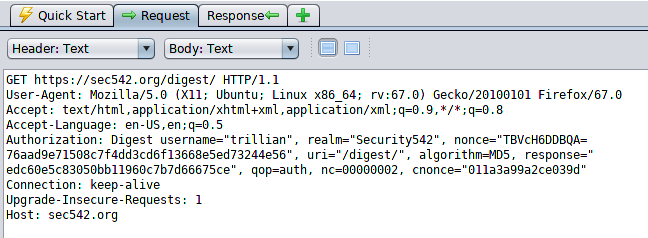

Crack HTTP Digest passwords captured from PCAPs
Crack HTTP Digest passwords captured from PCAPs
We can use a word list to crack HTTP Digest passwords captured from PCAPs, intercepted with proxies such as ZAP or Burp Suite, etc.
Tool Digestive:
https://github.com/eric-conrad/digestive/ root@kali:/# cd /home/kali/bin
root@kali:/# git clone https://github.com/eric-conrad/digestive.git
root@kali:/# cd digestive
root@kali:/# chmod +x digestive
root@kali:/# ./digestive --wordlist /opt/john/run/password.lst --username [USER] --realm [REALM] --uri [URI] --qop auth --nc [NC] --method GET --nonce [NONCE] --response [RESPONSE] --cnonce [CNONCE]
--wordlist /usr/share/john/password.lst → Default John Password List
Example  ./digestive --wordlist /usr/share/john/password.lst --username trillian --realm Security542 --uri /digest/ --qop auth --nc 00000002 --method GET --nonce TBVcH6DDBQA=76aad9e71508c7f4dd3cd6f13668e5ed73244e56 --response edc60e5c83050bb11960c7b7d66675ce --cnonce 011a3a99a2ce039d
NOTE: carefully to copy/paste the entire nonce, including both fields on either side of the "=" sign